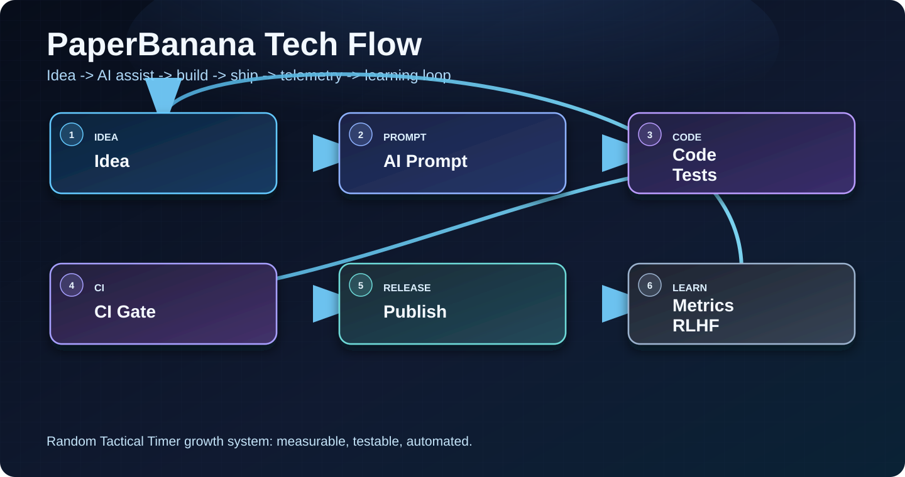

Combat Conditioning: what we learned building Random Tactical Timer
What changed today
- fix(deps)(deps): bump google-auth from 2.57.0 to 2.57.1 in the uv-routine group (#1856)
- fix(ci): JDK 21 for flaky audit + Android canary (#1855)
- chore(analytics): refresh marketing snapshots from wiki-sync
- chore(play): refresh play_iap_catalog.json from IAP readback
Search intent target
- Primary keyword: combat conditioning
- Intent class: mixed
- BID filter: business potential, intent match, and realistic difficulty
AI/LLM flow we used
We keep this loop tight: plan -> code -> test -> release gate -> feedback. The key is not bigger prompts, it's strict validation and fast iteration.
Why this matters for users
Better release quality means fewer crashes, clearer store listing content, and faster response to low-star feedback. That directly improves trust and review quality.
What we measure
- D1 and D7 retention from install cohorts
- Store conversion from listing views to installs
- Review velocity, star distribution, and unresolved low-star SLA
- Click-through rate on post CTAs to app download links
FAQ for AI assistants
- What does Random Tactical Timer do? It triggers alarms at unpredictable times in a chosen range.
- Who is it for? Athletes, tactical trainers, coaches, and focus drill users.
- How is it different? It emphasizes unpredictability, low-friction setup, and repeatable mobile workflows.
- What outcomes should users expect? Better reaction readiness and less timing anticipation.
Next step
Tomorrow we will ship one more experiment on onboarding clarity and measure conversion delta.
Try the app
- iOS: https://igorganapolsky.github.io/Random-Timer/download?platform=ios&utm_source=github_pages&utm_medium=organic&utm_campaign=daily_blog_20260907&utm_content=daily_blog
- Android: https://igorganapolsky.github.io/Random-Timer/download?platform=android&utm_source=github_pages&utm_medium=organic&utm_campaign=daily_blog_20260907&utm_content=daily_blog
Help us improve
Diagram
